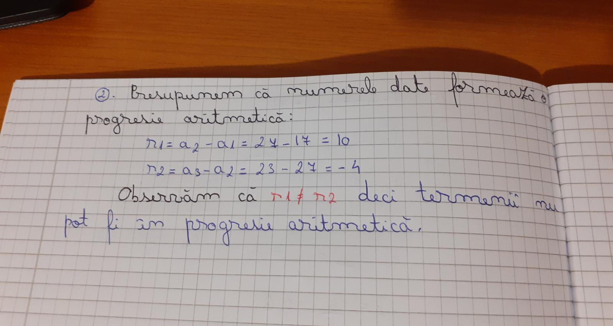
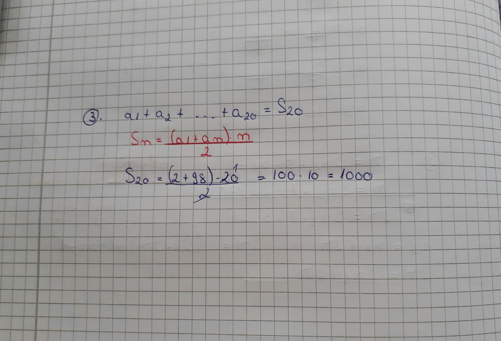

Definiție:
Un şir de numere cu primul termen nenul, în care fiecare termen, începând cu al doilea, se obţine din termenul precedent prin înmulțirea cu un același număr nenul, numit rație, se numeşte progresie geometrică.
Un șir de numere (bn)n≥1 este progresie geometrică de rație q dacă și numai dacă raportul oricăror termeni consecutivi este constant.
Observație:
O progresie geometrică (bn)n≥1 este determinată de primul termen și de rația q.
Notații:
- b1 - primul termen
- q - raţia
- bn - termenul general
Termenul general al unei progresii geometrice:
Este dat de formula: bn = b1 * qn-1 , n≥1.
Teoremă:
(bn)2 = bn-1 * bn+1, pentru orice n>=2
Teoremă:
bk * bn-k+1 = b1 * bn, pentru orice n, k>=1, k<=n
Teoremă:
Fie (bn)n≥1 o progresie geometrică de rație q și Sn = b1 + b2 + ... + bn. Atunci: Sn = b1 * (qn - 1) / q - 1, unde q diferit de 1, pentru oricare n>=1
sauSn = n * b1, pentru q = 1
Exerciții rezolvate:
1. Determinați numărul real pozitiv x, știind că x, 6, x - 5 sunt în progresie geometrică.
2. Arătați că numerele 17, 27, 23 nu pot fi termeni consecutivi ai unei progresii aritmetice.
3. Se consideră o progresie aritmetică cu a1 = 2 și a20 = 98. Calculați a1 + a2 + … + a20.
4. Calculați suma 1 + 4 + 7 + ... +31.

5. Găsiți suma primilor 20 de termeni ai progresiei aritmetice (an)n>=1, dacă a6 + a9 + a12 + a15 = 20.